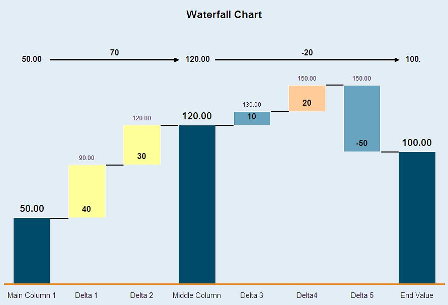

A waterfall chart is a form of data visualization that helps in understanding the cumulative effect of sequentially introduced positive or negative values.
I built waterfall charts using d3.js, which is a javascript library that focuses on data visualization.
demo1Ember.js is an open-source client-side JavaScript web application framework based on the model-view-controller (MVC) software architectural pattern. It allows developers to create scalable single-page applications.
Ember dashboard exampleSo I built a function that can transform the current charts to percent view. I wrote it mostly based on d3.
This feature allows users to change value of bars. After the changes, the charts will update and redraw the waterfall graph.
This feature is the most time-consuming one(I have been working on it for more than a week), and I am still improving it. So the work flow is like this: ember component keeps status of what to be shown in the table, and it also has a function("goif" function) that when "If-scenario button" is click, the "goif" function will be called. When it's called, it will dynamically create tables by using javascript DOM. Once users finish changing the values, the component's another function will be called to add a layer view to existing chart to represent the changes.
I have 3 weeks remaining here, so maybe I think I can help to build the basic frames for dashboards. A little like the one we saw here.
Ember dashboard example